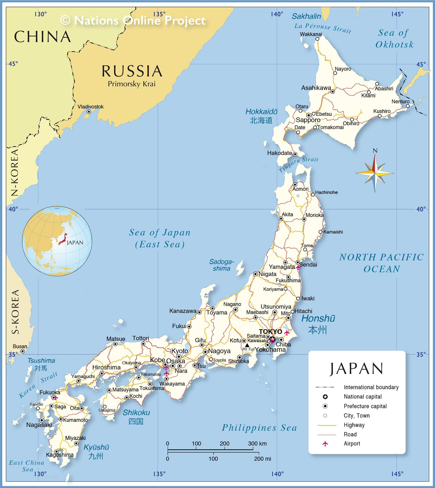

Japan is an island nation located in East Asia, situated in the Pacific Ocean, to the east of the Korean Peninsula and China. It consists of a chain of islands, with the four largest being Honshu, Hokkaido, Kyushu, and Shikoku, along with numerous smaller islands. The capital city is Tokyo, which is one of the largest and most populous cities in the world. Japan is known for its rich cultural history, technological innovation, and its distinct blend of traditional and modern lifestyles. Historically, it was isolated from the rest of the world until the mid-19th century but has since become one of the world's leading economic and technological powers.

Japan's Culture
People and society - People in Japan, a predominantly secular country, place a high importance on fostering harmonious relationships with others by giving back, and they see upholding social obligations as more important than preserving individualism. The three essential principles that underpin Japanese social relations are harmony, order, and self-improvement. The necessity of peaceful relationships with people and spiritual beings, as well as the fulfillment of social duties within the family and community, are also emphasized in religious rituals. The gods in Japanese mythology are both angry and loving. This implies that compassion is valued and action that leads to good relationships with others is rewarded. Japanese kids are likewise taught that social interaction is the key to happiness. When it comes to interpersonal interactions, the Japanese also practice self-control and refrain from rivalry and conflict.
Food and Drink - With a history spanning over 400 years, the Washoku meal is the oldest of the many varied traditional Japanese cuisines. One soup dish, one main dish, and two side dishes make up Kaiseki in its traditional form. Today's version of washoku includes deep-fried monkfish nuggets, thin slices of sea bream sashimi, and an appetizer of rapeseed blossoms, salted salmon roe, and shellfish, each with its own dressing. The Japan National Tourism Organization has also listed Washoku as part of the World's Intangible Cultural Heritage by UNESCO. Sukiyaki, tempura, sushi, sashimi, yakitori, tonkatsu, shabu shabu, soba, and udon are some other typical Japanese dishes.
Literature and the Arts Paintings from the 14th century, when Japanese painting history was just being started, had a strong Chinese influence. However, a distinct art form emerged as a result of Japan's isolation from the outside world from the 17th to the late 19th century. Paintings in this style tended to be more naturalistic and abstract. In order to portray the fundamental and important subject features, this style was visible in individual paintings, scenes of everyday life, religious studies, plant studies, and animal studies. Japanese writers have created engrossing literature since the early 17th century. Early works of Japanese literature were impacted by Chinese literature, cultural exchanges with China, and oral traditions that were taken up and documented in Chinese writing during the Nara period in the early eighth century. Japanese literature developed from the Nara Period to the Heian, Kamakura, and Muromachi periods, Edo, and Meiji (1868–1912), when there was a need to unify spoken and written languages. As Japan opened up to the outside world during this time, literary forms started to expand. The foundations of contemporary literature were established during World War II, and authors conveyed their dissatisfaction with Japan's defeat in the conflict in their writing.
Conclusion
In conclusion, Japan is a country that seamlessly blends ancient traditions with modern innovation. Located in East Asia, it is known for its rich cultural heritage, technological advancements, and strong economy. Japan's history, from periods of isolation to rapid modernization, has shaped a society that values respect, harmony, and precision. With a focus on high-quality manufacturing, technology, and global trade, Japan remains a leading global power. Its beautiful landscapes, rich cuisine, and cultural traditions make it a top destination worldwide. Despite challenges like an aging population, Japan continues to adapt and thrive, maintaining its influential role on the global stage.